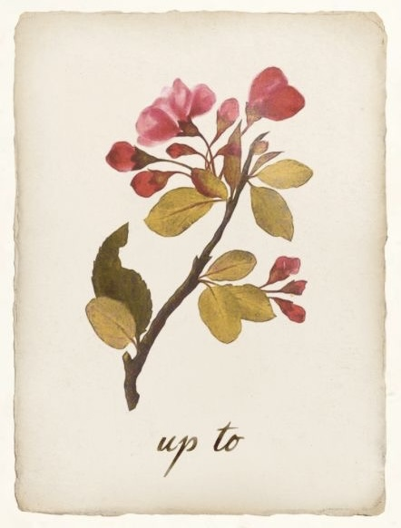

01 / CINEMA
电影
电影不仅讲述故事，也呈现一个时代如何理解女性、家庭、自由与权力。我从女性角色和女性经验出发，记录观影时的感受，也尝试看见影像背后更广阔的社会语境。

文章记录
FILM NOTES
她不是谁的“小姐”，她只是她自己
从《Enola Holmes》看女性如何在家庭期待与社会规则之中认识自己、建立主体性，并寻找属于自己的道路。
阅读文章 →← 返回首页电影不仅讲述故事，也呈现一个时代如何理解女性、家庭、自由与权力。我从女性角色和女性经验出发，记录观影时的感受，也尝试看见影像背后更广阔的社会语境。

从《Enola Holmes》看女性如何在家庭期待与社会规则之中认识自己、建立主体性，并寻找属于自己的道路。
阅读文章 →← 返回首页